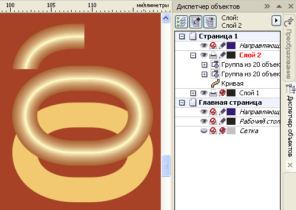
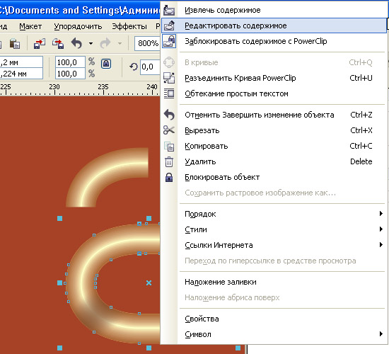
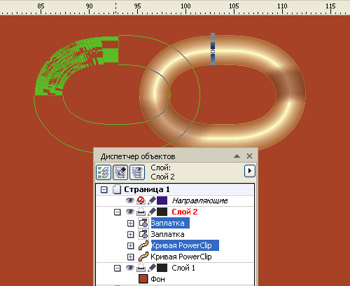
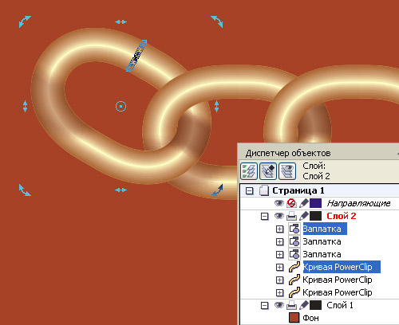

Цепи и цепочки (новая версия)
Универсальный способ создания полностью редактируемого изображения цепи явился результатом синтеза оригинальных приёмов, предложенных двумя авторами, Алексеем (ник: Solowejka) и Сергеем (ник: sergey).
Те, кто рисовал или пытался рисовать цепочки, знают, что это довольно непросто. Ведь каждое звено в месте соединения звеньев должно быть одновременно как бы в разных слоях, то есть участок одного звена «ныряющий» в другое звено, располагается над этим звеном (на уровень выше), а участок того же звена, «выныривающий» из другого, располагается под ним (теперь уже на уровень ниже ), то есть один и тот же объект должен быть одновременно и тут и там.
Люди уже давно придумали, как это преодолеть: делают так называемую заплатку, которая вырезается из участка того звена, которое фактически располагается ниже другого, и перекрывают этой заплаткой место пересечения с другим звеном, создавая иллюзию того, что в этом месте звено расположено выше другого.
В данном уроке суть способа та же, но используются некоторые рациональные приёмы работы плюс особенности программы CorelDRAW, позволяющие выполнять эту задачу настолько легко, что рисование любых цепей и цепочек – это уже не работа, а просто музыка!
Главное, будьте внимательны и выполняйте всё точно в соответствии с указаниями, изложенными в уроке.
Прежде, чем начать работу, выполните одну полезную установку, которая будет полезна всегда: установите смещение копии равным нулю.
")
Сначала создадим звено цепи. Это можно сделать разными способами, например, перетеканием от тонкого кольца к более широкому. Но опыт показал, что для того, чтобы края заплатки не были видны, лучше создать его как совокупность двух контурных групп от средней линии (овала) с шагом примерно на 1/3 меньше, чем толщина линий, например, толщина линии 0,2 мм, шаг контурной группы – 0,15 мм. Группы разъедините от исходной кривой, разгруппируйте и всё сгруппируйте вместе.
")
Создайте два дубля (копии) звена цепи. Одна копия нужна будет для создания заплатки. Заплатку делаем простой обрезкой.
Вторая копия нужна для создания контейнера.
Суть и смысл контейнера состоит в том, что он сам по себе не является самостоятельным объектом, а вспомогательным, его контур ограничивает видимую зону тех объектов, которые в него помещены, то есть – это как бы обрезная маска, которая не обрезает безвозвратно, а скрывает то, что оказывается за пределами контура контейнера, и всегда имеется возможность отредактировать наполнение контейнера. Это свойство позволяет с успехом использовать контейнер в тех случаях когда надо ограничить тень, падающую от других объектов, и которая должна быть видна только на поверхности одного объекта.
В нашем случае, для цепочки, звенья которой меняют положение в пространстве, описанные свойства контейнера очень кстати, поскольку надо не только тень ограничить поверхностью звена цепи, но при изменении положения звеньев, положение тени тоже будет изменяться, и удобство редактирования тени в данном случае как раз важно.
Использование контейнера для редактирования тени в сочетании со способом перекрытия заплаткой позволяет получить универсальный способ создания полностью редактируемого изображения цепи.
Итак, для создания контейнера из второй копии, разгруппируйте все линии, образующие звено, переведите из абрисов в объекты и объедините в общий контур.

Затем создадим тени, используя полученную нами заплатку как источник тени. Разъедините тень и объект, из которого её создавали.
")
Затем поместим звено в контейнер. Для этого выделите звено и выбирете Эффекты – PowerClip – Поместить в контейнер. Курсор должен принять вид жирной стрелки, щёлкните ей по силуэту контейнера.
")
То же самое проделайте с двумя тенями (выделяйте сразу обе). Скорее всего сразу тени не займут желаемого положения и придётся их переместить. Щёлкните по контейнннеру правой кнопкой мыши и в открывшемся меню выбирете Редактировать содержимое.

В открывшемся окне можете тени перемещать, трансформировать, задавать прозрачность и даже корректировать цвет с помощью Лаборатории по корректировке растровых изображений.
")
Затем щёлкните по одному из редактируемых объектов правой кнопкой мыши и выбирете Завершить редактирование или, если меню не открывается, выбирете Эффекты – PowerClip – Завершить редактирование.
Затем расположите заплатку над звеном точно на своём месте, используя большой масштаб увеличения.
Вот такой пакет из двух объектов: контейнера и заплатки – это и есть универсальный элемент цепи. Дублируйте его, перемещайте, набирайте цепочку. Главное – не сгруппировывайте.
Выделите оба объекта. Дублируйте (Ctrl + D). Выделение не снимайте (это важно!). Сместите полученную дублированием копию в сторону заплатки, используя клавиши со стрелками или мышью (можно с нажатой Ctrl для строгого перемещения по горизонтали или по вертикали).

Для удобства перемещения с помощью клавиш со стрелками настройте шаг перемещения поменьше (например, 0,01 мм), а большой шаг перемещения 10 х 0,01 мм (с нажатой Shift).
")
Затем опять нажмите Ctrl + D, при этом получится новая копия (дубль) с повтором последнего выполненного смещения.
Нажимая подряд Ctrl + D столько раз, сколько нужно звеньев, Вы получите прямолинейную цепочку.
Если нужно получить цепочку по кривой линии, то после очередного нажатия Ctrl + D можете добавить небольшой поворот звена, при этом для следующего дубля будет повторено смещение с поворотом, если очередной дубль занял неудачное положение, можете корректировать его, главное – не снимать выделение, и можете снова дублировать.

")
")
")
")
Black, вот одно преимущество в отличии от "+", нарисуй квадратик, нажми Ctrl+D, смести квадратик, не снимая выделения поверни его на 45 градусов, нажми несколько раз Ctrl+D, посмотри что происходит, каждый второй квадратик будет поворачиваться на 45 градусов. (извиняюсь, что это все не по теме, но может кому то будет полезно)
Мне кажется, что всё логично: копировать – не значит смещать.
Ньютону яблоко-то по голове почему ударило?
Потому, что он под яблоней сидел, а яблоко упало там, где родилось.
По-моему всё просто и ясно.
Хм, ну ясно. В общем ответа, что же такого полезного в опции дублирования с нулевым смещением, и почему нельзя просто воспользоваться клавишей "+", я так и не услышал. И не услышу, судя по всему.
В любом случае: +, Ctrl D, правая кнопка, пробел — способы копирования.
Я вот по привычке пользуюсь Ctrl Insert и Shft Insert. Ничего с собой поделать не могу.
Прописалось в подсознании :(
Придумал ещё один способ копирования Сообщение # 3 ;D
Лучший способ копирования -- это Партеногенез :)
Подскажите, как раскрасить таким образом звено, как у Вас ? Перепробовал все виды заливки, в том числе и сеткой, к сожалению, не получилось...
Ivako, читайте внимательно абзац между первым и вторым рисунками.
Спасибо за быстрый ответ. Да,, я читал этот абзац между первым и вторым рисунками, но к моему стыду за своё невежество, я не смог разобраться от какого тонкого кольца к более широкому сделать перетекание, ведь само кольцо является цельной фигурой и я не знаю, как это сделать, хотя с процессом Перетекание я знаком.
Далее, для меня также не ясно действие создания кольца как совокупности двух контурных групп от средней линии (овала) с шагом…», хотя как работать с контурами, я также знаком практически, но, наверное, моих знаний не достаточно, а чтобы не морочить Вам голову, Вы подскажите, где я могу увидеть такой пример, если он конечно есть…
С уважением
Не пойму, в чем проблема, тем более, вы говорите, что "знакомы практически" Что мешает сделать так:
или в случае перетекания:
Страницы